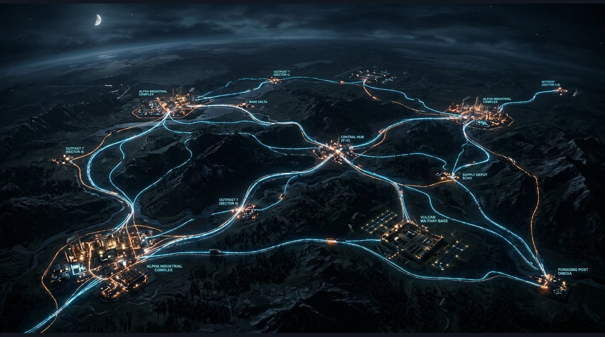

Repères et accès
Le Sud de Tarkov : l’Échangeur est une position de transport stratégique qui relie le port et la périphérie industrielle de la ville. Au centre, le grand centre commercial ULTRA, qui servit de base d’opérations à l’évacuation d’EMERCOM. Fiche publique.
Volume
40 minutes, 11 à 15 PMC, tous niveaux admis. 232 points de spawn relevés.
Électricité
Un réseau d’éclairage entièrement maillé, pilotable depuis la centrale. C’est ce qui rend les sorties conditionnelles possibles : sans courant, elles restent fermées.
Alarmes
Des alarmes entourent certains magasins et une alarme déclenchable se trouve au magasin d’armes KIBA. Les alarmes peuvent attirer les voisins.

Sorties et transits
Sept sorties sont documentées : trois pour les PMC et quatre partagées. Le lieu est le plus strict du jeu : la plupart des sorties exigent une action sur place, et l’une d’elles est explicitement signalée comme ne fonctionnant pas.
Sorties documentées
Fiche publique et patch 1.2.0.0.
| Sortie | Camp | Toujours ouverte | Usage unique | Conditions | Notes | |
|---|---|---|---|---|---|---|
| Path to River (Flare) | PMC | ✔ | ✘ | Shoot a green flare into the sky while inside the signal flare area. If the flare doesn't reach a certain height, the extraction won't open. ; Flares: ; Handheld RSP-30 green flare ; Signal pistol fired 26x75mm green flare ; Only one person amongst a lobby-made group needs to shoot a flare to open the extraction for all members of the group. | Upon entering the signal flare area, a notification will pop up in the bottom right corner of the screen: ; If the flare was fired correctly, a new notification pops up: ; ; ; Signal flare area and extract zone map ; | pmc |
| Power Station V-Ex | PMC | ✘ | ✔ | per player Maximum of 4 players | The fee amount is influenced by your Scav karma. There are border snipers beyond the vehicle. | pmc |
| Saferoom Exfil | PMC | ✔ | ✔ | 1.Turn on power at the power station ; 2.Flush urinal in the "Burger Spot" restaurant ; 3.Swipe Object #11SR keycard at revealed keycard panel ; 4.Lock the extraction door from inside with the button next to it | A lever to open the Object-14 container can be found inside the extraction. | pmc |
| Emercom Checkpoint | Partagée | ✔ | ✘ | — | — | shared |
| Railway Exfil | Partagée | ✔ | ✘ | — | — | shared |
| Scav Camp (Co-Op) | Partagée | ✔ | ✘ | Scav + PMC | — | shared |
| Smugglers' Tunnel Note: This extraction does currently not work. | Partagée | ✔ | ✘ | Interchange underground utility plan | — | shared |
Transits sortants
Deux destinations, disponibles une minute après le début du raid.
| Transit | Destination | Camp | Conditions | Emplacement |
|---|---|---|---|---|
| Transit vers les douanes | customs | PMC et Scav | Only available 1 min after raid start | At the southern end of the highway |
| Transit vers les rues de Tarkov | streets-of-tarkov | — | — | — |
Intitulés de jeu
Neuf intitulés recensés par l’instantané des données.
| Libellé français | Intitulé de jeu | Camp | Commandée par un interrupteur | Correspondance |
|---|---|---|---|---|
| Extraction chemin de fer | ex interchange pmc railway | PMC | non | absente de la fiche publique |
| Pièce sécurisée | ex interchange pmc saferoom | PMC | non | absente de la fiche publique |
| Point de contrôle Emercom | ex interchange pmc emercom | PMC | non | absente de la fiche publique |
| Sentier vers la rivière (fusée détresse) | ex interchange pmc sniper | PMC | non | absente de la fiche publique |
| Trou dans la clôture | Hole Exfill | PMC | non | absente de la fiche publique |
| Véhicule de la centrale électrique | ex interchange pmc auto | PMC | non | absente de la fiche publique |
| Emercom Checkpoint | ex interchange scav emercom | Scav | non | absente de la fiche publique |
| Railway Exfil | ex interchange scav railway | Scav | non | absente de la fiche publique |
| Camp scav (Co-op) | ex interchange coop basement | Partagée | non | absente de la fiche publique |
La sortie Saferoom Exfil est la plus exigeante : il faut rétablir le courant à la centrale, puis actionner l’urinoir du local Burger Shot. Elle est à usage unique. La sortie Power Station V-Ex est elle aussi à usage unique et limitée à quatre joueurs. Le tunnel de contrebandiers est signalé par la fiche publique comme ne fonctionnant pas actuellement : nous le mentionnons pour être complet, pas comme une option.
Rencontres et menaces
Killa tient le centre commercial et les magasins voisins, présent dans 60 % des instantanés relevés. L’Infected Tagilla apparaît avec une présence de 75 %, plus forte que partout ailleurs. Les données relèvent aussi des infectés crieurs.
| Rencontre | Présence | Zones de spawn | Escortes | Localisation (fiche publique) |
|---|---|---|---|---|
| Infected Tagilla | 75 % | ZoneTagilla | — | — |
| Killa | 60 % | ZoneCenterBot, ZoneGoshan, ZoneIDEA, ZoneOLI | — | — |
| infectedScreamer | présence certaine | — | — | — |
Ce que le patch 1.2 a changé ici. De nouveaux emplacements de butin ont été ajoutés au camp EMERCOM, aux objets 11SR, 14 et 21WS, aux zones de service d’OLI et au magasin d’armes KIBA ; de nouveaux conteneurs ont été placés, corps de PMC compris ; le modèle de butin des caisses des magasins OLI, Goshan et IDEA a été modifié. Les clés ne sont plus nécessaires pour les caisses des magasins ULTRA autonomes, mais le restent pour Goshan, IDEA et OLI. Notes du patch 1.2.0.0.
Dangers de terrain
Dix-huit zones de snipers et sept champs de mines relevés. Le danger de bordure est ici entièrement periphery : le pourtour de la carte forme une ceinture de snipers, et c’est le long de cette ceinture qu’il faut éviter de longer à découvert.
| Type de danger | Occurrences | Nature |
|---|---|---|
| Sniper de bordure | 18 | zones invisibles ou balisées selon le type |
| Champ de mines | 7 | zones invisibles ou balisées selon le type |
Clés et butin
Seize clés documentées, dont trois qui pèsent lourd : la carte d’accès de l’objet 11SR, la carte d’accès de l’objet 21WS et les clés de caisse de Goshan, d’IDEA et d’OLI.
- EMERCOM medical unit key accès permanent documenté quête : ✔
- Goshan cash register key accès permanent documenté quête : ✔
- Grumpy's hideout key
- IDEA cash register key accès permanent documenté quête : ✔
- Kiba Arms inner grate door key accès permanent documenté quête : ✔
- Kiba Arms outer door key accès permanent documenté quête : ✔
- NecrusPharm pharmacy key
- Object #11SR keycard accès permanent documenté quête : ✔
- Object #21WS keycard accès permanent documenté quête : ✔
- OLI administration office key
- OLI cash register key accès permanent documenté quête : ✔
- OLI logistics department office key accès permanent documenté quête : ✔
- OLI outlet utility room key
- Power substation utility cabin key
- Station 14-4 KORD Arshavin K. pass (Restored) accès permanent documenté quête : ✔
- ULTRA medical storage key
Attention à la lecture du patch. La suppression de la clé pour les caisses des magasins ULTRA autonomes ne s’applique pas aux magasins Goshan, IDEA et OLI : leurs caisses exigent toujours une clé dédiée. Confondre les deux est l’erreur la plus coûteuse du lieu, car la caisse contient le butin le plus accessible du raid.
Conduite selon le profil
L’Échangeur se joue par les bords. Les allées couvertes entre les magasins sont plus sûres que le pourtour, et la sortie la plus simple à tenir est celle qui se trouve du côté opposé à l’apparition. Les retours d’expérience publiés sur Reddit décrivent le lieu comme un grand rectangle, presque sans coins morts, et conseillent de longer le pourtour pour gagner les sorties plutôt que de traverser par le milieu. Fil Reddit sur les sorties les plus faciles à retenir.
- Débutant. Chercher la sortie d’abord, le butin ensuite. Une sortie sans sac est le meilleur compromis d’un premier raid : le checkpoint EMERCOM est partagé et sans condition documentée.
- Confirmé. Penser électricité. Rétablir le courant à la centrale ouvre des portes, mais allume aussi le centre commercial et change la posture des défenseurs qui s’y installent.
- Expérimenté. Travailler les étals de matériel : l’importance du butin sur cette carte tient aux caisses, aux conteneurs et aux corps de PMC, trois catégories que le patch 1.2 a densifiées.
| Profil | Durée | Effectif | Sorties PMC | Sorties Scav | Rencontres | Ennemis |
|---|---|---|---|---|---|---|
| PvP Zone | 40 min | 11-15 | 7 | 2 | Infected Tagilla, Killa, infectedScreamer | des scavs, Killa, Infected Tagilla, infectedScreamer |
| PvE Zone | 40 min | 11-15 | 7 | 2 | BEAR, Infected Tagilla, Killa, USEC, infectedScreamer | des scavs, Killa, BEAR, USEC, Infected Tagilla, infectedScreamer |
| PvP Season | 40 min | 11-15 | 7 | 2 | Infected Tagilla, Killa, infectedScreamer | des scavs, Killa, Infected Tagilla, infectedScreamer |
Aucune variante recensée pour ce lieu.
- ennemis +BEAR, USEC
- boss +BEAR, USEC
Sources et limites
Instantané communautaire du 18 novembre 2026, fiche publique du même jour, et notes officielles du patch 1.2.0.0. Les distances et les angles de camp ne sont pas mesurés ; la fiche publique n’en donne pas. Les durées et effectifs proviennent de l’instantané des données et peuvent varier d’une saison à l’autre.
- Échangeur — fiche de lieu : lore, sorties, clés, alarmes et caractéristiques.
- Tarkov.dev — cartes et rencontres : instantané du profil PvP Zone.
- Tarkov.dev — libellés français et profil PvE : intitulés et écarts.
- Patch 1.2.0.0 : butin, caisses, clés et correctifs du lieu.
- Fil Reddit : retours d’expérience, utilisés comme exercices.
- MapGenie et Kappa Guide : aides de lecture communautaires.